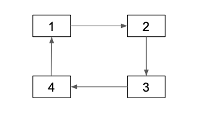
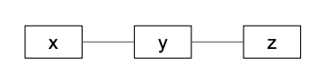
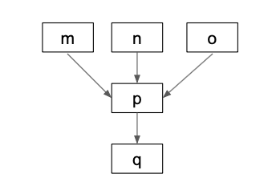
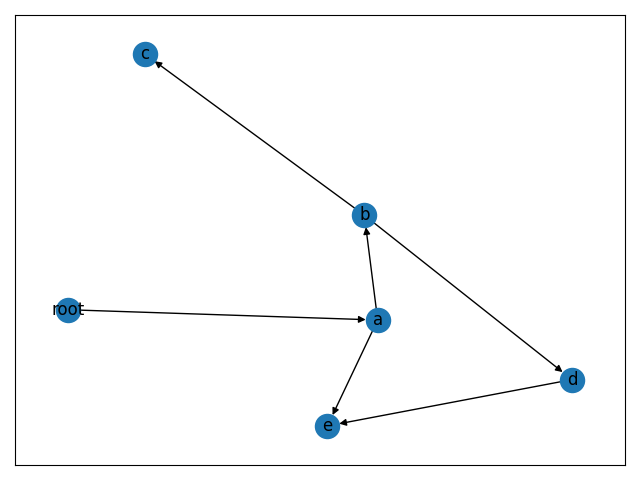
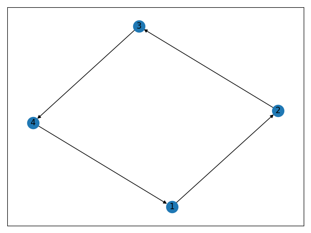

Building DAGs / Directed Acyclic Graphs with Python
Directed Acyclic Graphs (DAGs) are a critical data structure for data science / data engineering workflows. DAGs are used extensively by popular projects like Apache Airflow and Apache Spark.
This blog post will teach you how to build a DAG in Python with the networkx library and run important graph algorithms.
Once you're comfortable with DAGs and see how easy they are to work with, you'll find all sorts of analyses that are good candidates for DAGs. DAGs are just as important as data structures like dictionaries and lists for a lot of analyses.
Simple example
Consider the following DAG:

root, a, b, c, d, and e are referred to as nodes. The arrows that connect the nodes are called edges. A graph is a collection of nodes that are connected by edges. A directed acyclic graph is a special type of graph with properties that'll be explained in this post.
Here's how we can construct our sample graph with the networkx library.
import networkx as nx
graph = nx.DiGraph()
graph.add_edges_from([("root", "a"), ("a", "b"), ("a", "e"), ("b", "c"), ("b", "d"), ("d", "e")])
DiGraph is short for "directed graph".
The directed graph is modeled as a list of tuples that connect the nodes. Remember that these connections are referred to as "edges" in graph nomenclature. Take another look at the graph image and observe how all the arguments to add_edges_from match up with the arrows in the graph.
networkx is smart enough to infer the nodes from a collection of edges.
graph.nodes() # => NodeView(('root', 'a', 'b', 'e', 'c', 'd'))
Algorithms let you perform powerful analyses on graphs. This blog post focuses on how to use the built-in networkx algorithms.
Shortest path
The shortest path between two nodes in a graph is the quickest way to travel from the start node to the end node.
Let's use the shortest path algorithm to calculate the quickest way to get from root to e.
nx.shortest_path(graph, 'root', 'e') # => ['root', 'a', 'e']
You could also go from root => a => b => d => e to get from root to e, but that'd be longer.
Longest path
The dag_longest_path method returns the longest path in a DAG.
nx.dag_longest_path(graph) # => ['root', 'a', 'b', 'd', 'e']
Topological sorting
Nodes in a DAG can be topologically sorted such that for every directed edge uv from node u to node v, u comes before v in the ordering.
Our graph has nodes (a, b, c, etc.) and directed edges (ab, bc, bd, de, etc.). Here's a couple of requirements that our topological sort need to satisfy:
- for ab, a needs to come before b in the ordering
- for bc, b needs to come before c
- for bd, b needs to come before d
- for de, d needs to come before e
Let's run the algorithm and see if all our requirements are met:
list(nx.topological_sort(graph)) # => ['root', 'a', 'b', 'd', 'e', 'c']
Observe that a comes before b, b comes before c, b comes before d, and d comes before e. The topological sort meets all the ordering requirements.
Checking validity
We can check to make sure the graph is directed.
nx.is_directed(graph) # => True
We can also make sure it's a directed acyclic graph.
nx.is_directed_acyclic_graph(graph) # => True
Directed graph that's not acyclic
Let's make a graph that's directed, but not acyclic. A "not acyclic graph" is more commonly referred to as a "cyclic graph".

graph = nx.DiGraph()
graph.add_edges_from([(1, 2), (2, 3), (3, 4), (4, 1)])
nx.is_directed(graph) # => True
nx.is_directed_acyclic_graph(graph) # => False
An acyclic graph is when a node can't reach itself. This graph isn't acyclic because nodes can reach themselves (for example 3 can take this trip 3 => 4 => 1 => 2 => 3 and arrive back at itself.
Directed graphs that aren't acyclic can't be topologically sorted.
list(nx.topological_sort(graph)) # throws this error - networkx.exception.NetworkXUnfeasible: Graph contains a cycle or graph changed during iteration
Let's revisit the topological sorting requirements and examine why cyclic directed graphs can't be topologically sorted. Our graph has nodes 1, 2, 3, 4 and directed edges 12, 23, 34, and 41. Here are the requirements for topological sorting:
- for 12, 1 needs to come before 2 in the ordering
- for 23, 2 needs to come before 3
- for 34, 3 needs to come before 4
- for 41, 4 needs to come before 1
The first three requirements are easy to meet and can be satisfied with a 1, 2, 3 sorting. But the final requirement is impossible to meet. 4 needs to be before 1, but 4, 1, 2, 3 isn't possible because 3 needs to come before 4.
Topologically sorting cyclic graphs is impossible.
Graph that's neither directed nor acyclic
We've been using the DiGraph class to make graphs that are directed thus far. You can use the Graph class to make undirected graphs. All the edges in an undirected graph are bidirectional, so arrows aren't needed in visual representations of undirected graphs.

graph = nx.Graph()
graph.add_edges_from([('x', 'y'), ('y', 'z')])
nx.is_directed(graph) # => False
nx.is_directed_acyclic_graph(graph) # => False
You need to use different algorithms when interacting with bidirectional graphs. Stick with DAGs while you're getting started ;)
Multiple roots
A DAG can have multiple root nodes.

graph = nx.DiGraph()
graph.add_edges_from([('m', 'p'), ('n', 'p'), ('o', 'p'), ('p', 'q')])
nx.is_directed(graph) # => True
nx.is_directed_acyclic_graph(graph) # => True
list(nx.topological_sort(graph)) # => ['o', 'n', 'm', 'p', 'q']
A directed graph can have multiple valid topological sorts. m, n, o, p, q is another way to topologically sort this graph.
Graphing a DAG
It's easy to visualized networkx graphs with matplotlib.
Here's how we can visualize the first DAG from this blog post:
from matplotlib import pyplot as plt
g1 = nx.DiGraph()
g1.add_edges_from([("root", "a"), ("a", "b"), ("a", "e"), ("b", "c"), ("b", "d"), ("d", "e")])
plt.tight_layout()
nx.draw_networkx(g1, arrows=True)
plt.savefig("g1.png", format="PNG")
# tell matplotlib you're done with the plot: https://stackoverflow.com/questions/741877/how-do-i-tell-matplotlib-that-i-am-done-with-a-plot
plt.clf()

Here's how to visualize our directed, cyclic graph.
g2 = nx.DiGraph()
g2.add_edges_from([(1, 2), (2, 3), (3, 4), (4, 1)])
plt.tight_layout()
nx.draw_networkx(g2, arrows=True)
plt.savefig("g2.png", format="PNG")
plt.clf()

Next steps
Now that you're familiar with DAGs and can see how easy they are to create and manage with networkx, you can easily start incorporating this data structure in your projects.
I recently created a project called unicron that models PySpark transformations in a DAG, to give users an elegant interface for running order dependent functions. You'll be able to make nice abstractions like these when you're comfortable with the DAG data structure.
Check out this blog post on setting up a PySpark project with Poetry if you're interested in learning how to process massive datasets with PySpark and use networkx algorithms at scale.